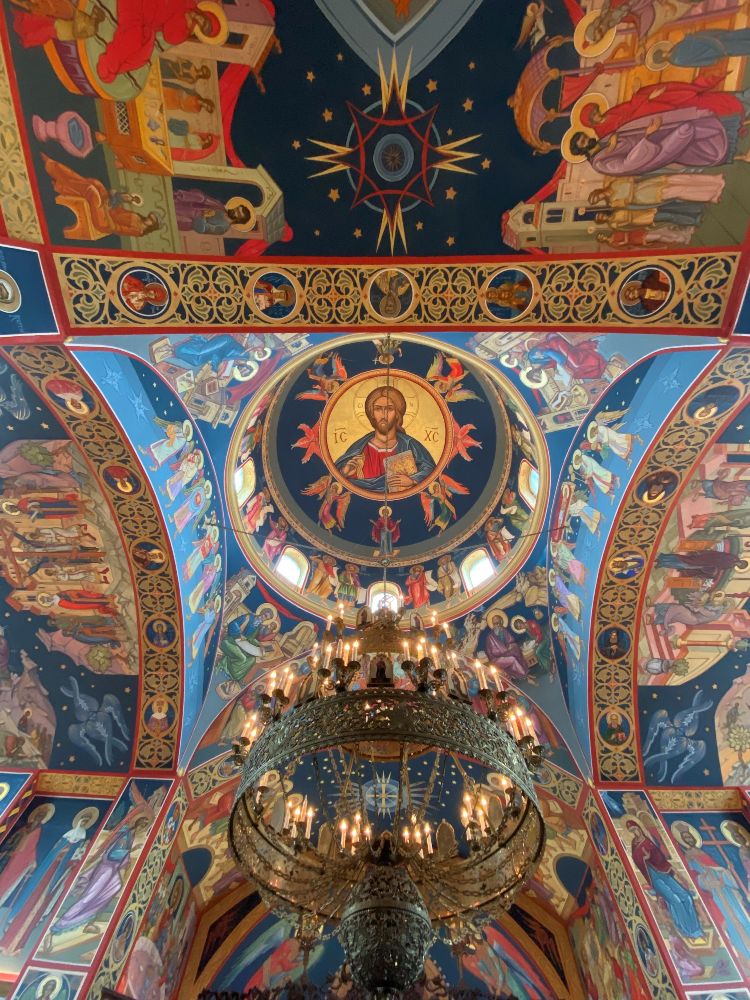

Walking Into an Orthodox Church for the First Time

I remember the exact moment I walked through the doors of an Orthodox church for the first time. I'd been researching Orthodoxy online for almost a year at that point, reading theology, watching video tours of churches in Russia, listening to Byzantine chant on YouTube at midnight, but I hadn't actually stepped inside a real one yet. There's a gap between knowing about something and experiencing it, and I had no idea how large that gap was until I stood in the vestibule on a Sunday morning and smelled the incense.
The thing is, I grew up Protestant. I knew what churches looked like. I'd been to probably hundreds of services in spaces that ranged from school gymnasiums to big box church buildings with projection screens. I thought I knew what Christian worship felt like. And then I walked in and it was like a different country. Not hostile, not alienating. More like finding out a language you'd only read about is actually spoken somewhere.
The first thing you notice is the smell. Frankincense and myrrh, burning in a censer. Orthodox incense has this warm, resinous quality that I can't compare to anything else. It's not the generic incense smell from a gift shop. It's ancient. It's the same incense that was used in the Temple in Jerusalem, the same incense that has been used in Christian worship since at least the 4th century. Breathing it in feels like the room is telling you to slow down.
Then you see the icons. They cover every wall. Not framed paintings in the way you might find religious art in a museum, but living presences, at least that's the only way I can describe it. In Orthodox theology, icons aren't decorations. They're windows. The people depicted in them, Christ, the Theotokos (the Virgin Mary), the saints, are understood to be genuinely present in some way. When you venerate an icon by kissing it, you're not kissing paint. You're reaching through to something on the other side.
I stood at the back of the nave for the first ten minutes just looking around. The iconostasis, the screen of icons dividing the nave from the altar, goes floor to ceiling and is the most visually overwhelming thing I've ever seen in a church. Every inch of it is covered in hand-painted icons in gold frames. Candles flickering. The priest and deacon moving in and out through the Royal Doors in choreographed patterns that have been the same for 1,600 years. The choir chanting in harmonies that don't resolve the way Western music does. They hang in the air differently.
At some point I stopped analyzing it and just stood there. I don't know for how long. When I finally came back to myself, I understood, at least a little bit, what Vladimir's emissaries were trying to say.
You don't evaluate an Orthodox church the way you evaluate a building. You experience it the way you experience music, all at once, with your whole body, and you can't fully explain afterwards what happened to you.
— Ruth Anna, after the fact
I've been back many times since that first Sunday. Each time I notice something I hadn't noticed before, a small icon tucked in a corner, the way the light changes through the upper windows during different seasons, the specific acoustic quality of the chanting in that particular space. These buildings reward attention in a way that most spaces don't.
If you've never been inside an Orthodox church, I'd genuinely encourage you to just go. You don't have to be Orthodox, you don't have to believe anything in particular. Just go and stand there and see what happens. The building will do the rest of the work.
What I Think About When I Look at Domes
I've spent a lot of time looking up at the sky, admiring the clouds, stars, bird flying. Not in a dreamy, distracted way, but in a way one observes art, there is more than meets the eye to the sky. That feeling is tenth-fold when I look up at an Orthodox dome.
The dome in Orthodox church architecture isn't an aesthetic choice. It's a theological statement. The dome represents heaven, the vault of the sky, the celestial realm. The nave below it represents the earth. And the whole structure is designed so that when you're standing in it, you're standing at the intersection of both. Heaven is literally above your head. The dome is the roof of the universe as understood by Orthodox Christian cosmology, and you're standing underneath it, participating in a liturgy that is simultaneously happening on earth and in the heavenly realm.
When you understand that, the iconography of the dome makes complete sense. The central dome of most Byzantine style Orthodox churches has a specific image: Christ as Pantocrator, "Ruler of All," looking directly down at you. Not looking away, not depicted in profile. Looking at you. His right hand is raised in blessing. He holds the Gospel book in his left. It's one of the most direct images in all of Christian art: the Ruler of the Universe, gazing down at whoever stands below. It's meant to be a little overwhelming, and it is.
The drums below the dome, the cylindrical structures that the dome sits on, are typically pierced with windows that let light stream in and make the dome appear to float. This was figured out by Byzantine architects in the 6th century and it still works just as well now. The Hagia Sophia does this most dramatically. Procopius, a historian writing in the 6th century, said the dome appeared to be "suspended from heaven by a golden chain." That observation has been repeated by basically everyone who has stood under it since.
Different Orthodox architectural traditions handle domes in different ways, and honestly that's one of the more interesting rabbit holes I've gone down in my research. Byzantine churches tend toward single large domes, sometimes with smaller subsidiary domes over the arms of a cross shaped plan. Russian churches developed the onion dome, that pointed bulbous shape now so iconic it basically is Russia in the visual imagination of the West. The onion shape is actually an adaptation to the Russian climate: the steeply curved surface sheds snow more efficiently than a hemisphere would. Form follows function, even in sacred architecture.
Ethiopian and Coptic churches do something entirely different. Their architecture evolved in isolation from both Byzantine and Russian traditions, and the result is its own visual language that doesn't look like either. Georgian churches have their own distinctive style too. The Orthodox world is architecturally diverse in ways that most people don't expect when they first encounter it.
But all of them, regardless of the tradition, are trying to do the same thing: create a space where the ordinary world drops away and something else becomes possible. And a lot of the time, when I'm standing in one of these buildings looking up at a dome, I think it works. Whatever that means.
- Byzantine dome: wide hemisphere on a drum of windows, letting light pour in. Think Hagia Sophia, or any Greek Orthodox church.
- Russian onion dome: the pointed bulb shape, often gilded or brightly coloured. Visually distinctive from miles away.
- Georgian tent dome: a pointed conical shape distinctive to medieval Georgian church architecture. Looks almost like a stone version of a pine tree.
- Romanian dome: often a combination of Byzantine and Gothic influences, with elongated proportions that give the domes a more vertical feel.
- Serbian dome: influenced by the Morava school of medieval Serbian architecture; tends toward elaborate carved decoration on the exterior.
I'm still figuring out how to talk about all of this clearly. But the short version is: domes in Orthodox churches are not decoration. They are the universe. And once you know that, you can never look at one the same way again.
Every Church I Haven't Visited Yet

There's a list on my phone. It's called "Churches (Must Visit)" and it currently has 47 entries. I add to it regularly, usually late at night when I've fallen down another research rabbit hole. Some of the entries have notes like "need to book boat" (Kizhi Pogost is on an island in Lake Onega and you can only get there by hydrofoil or boat) or "check if tourist access allowed" (some monasteries are active communities and have restricted visiting hours).
I love this list even though there's no realistic path to completing it in the next decade, or maybe ever. Visiting Kizhi Pogost in Karelia requires getting to Saint Petersburg, then taking a train to Petrozavodsk, then taking a hydrofoil across the lake. Visiting the Monastery of Saint Anthony in Arizona is comparatively straightforward, sitting in the desert outside Florence, you just drive there. But I'd have to get to Arizona first. The Ethiopian churches require a flight to Addis Ababa and then a domestic flight or a very long drive on roads that are not always roads.
But here's the thing: researching churches I can't visit yet has its own kind of value. Every church on this list has a story behind it, and learning those stories has changed how I understand both Christianity and the history of the world. I never knew that Orthodox Christianity had been in Japan since the 1860s, or that there are ancient Christian communities in Kerala, India who trace their founding to the Apostle Thomas. I had no idea that Ethiopia became Christian in 330 AD, centuries before much of Europe, or that the Coptic Church in Egypt was established by Saint Mark the Evangelist himself and has been there ever since.
Ethiopia in particular stopped me cold when I started researching it. The oldest illustrated Bible in the world is located there: the Garima Gospels, housed at Abba Garima Monastery in the Tigray region. Carbon dating places them between 330 and 650 AD, making them not only the oldest illustrated Gospel book ever discovered, but a direct artifact of the period when Ethiopia first received the Christian faith. They are hand-illustrated, still intact, still in the monastery where they were created. That alone would be worth a trip. The largest Orthodox Christian church in the world, the Cathedral of Our Lady Mary of Zion in Axum, is also in Ethiopia. The global map of Orthodoxy looks almost nothing like what most people imagine.
Oldest Orthodox Sites
The Monastery of Saint Pishoy in Wadi El Natrun, Egypt, founded in the 4th century by St. Pishoy, is one of the oldest continually inhabited Coptic Orthodox sites, with structures dating to the 5th century and monks still living there today. The Etchmiadzin Cathedral in Armenia, founded around 301 AD, is also widely considered the oldest cathedral in the world. Christianity in these regions was not an import from Europe. It was there first.
The geography of Orthodox Christianity doesn't map onto the mental picture that most people in North America carry around. We tend to think of Christianity as a Western, European religion. But the oldest continuous Christian communities in the world are in the Middle East and Africa. The biggest Orthodox church in the world is in Ethiopia. The Orthodox faith has more members than any individual Protestant denomination. It is genuinely a global tradition, and most of those 260 million Orthodox Christians have never lived anywhere near Europe.
That scope is part of what I'm trying to document here. One church at a time, one story at a time. If I make it to maybe ten of the churches on my list before I'm thirty, I'll consider that a success.
Interested in Reading More?
The Destinations page has detailed writeups of every church I've researched so far. The Journal page goes deeper into Orthodox spiritual literature and tradition. And the About page has the full story of how I got into all of this in the first place.
Death to the World: The Last True Rebellion
I want to talk about the phrase that changed my understanding of Orthodox Christianity more than almost anything else. Not a book. Not a church visit. A phrase. Death to the world.
I first encountered it through a video that someone shared in a forum I was reading during my research into Orthodoxy. I was months into this rabbit hole at that point, reading theology, listening to podcasts, watching tours of Russian churches at midnight. And then this video appeared.
I watched it three times. Something about it cut through everything I had been reading in a way that the theology books couldn't quite do by themselves. It wasn't an argument. It was a posture. A way of standing in the world that said: I'm not available to be consumed by this. I'm not for sale. I have already died to the things you're offering me.
What Does "Death to the World" Mean?
The phrase comes from Saint Paul: "The world is crucified to me, and I to the world" (Galatians 6:14). The idea is not that Christians hate the created world or reject beauty or refuse to participate in life. The Orthodox tradition is profoundly positive about creation. The rejection is of something more specific: what the Fathers called "the passions." And there is a text, attributed to the 7th century Syrian ascetic Saint Isaac the Syrian, that defines it more clearly than anything I've read:
"The world is the general name for all the passions. When we wish to call the passions by a common name, we call them the world. But when we wish to distinguish them by their special names, we call them passions. The passions are the following: love of riches, desire for possessions, bodily pleasure from which comes sexual passion, love of honor which gives rise to envy, lust for power, arrogance and pride of position, the craving to adorn oneself with luxurious clothes and vain ornaments, the itch for human glory which is a source of rancor and resentment, and physical fear. Where these passions cease to be active, there the world is dead.
Someone has said of the Saints that while alive they were dead; for though living in the flesh, they did not live for the flesh. See for which of these passions you are alive. Then you will know how far you are alive to the world, and how far you are dead to it."
+St Isaac the Syrian (7th Century)
Read that list again slowly. Love of riches. Desire for possessions. Love of honor. Lust for power. Arrogance. The craving to be seen. The fear of losing status. These are not exotic sins that apply only to obvious villains. They are the very things that modern consumer culture is built on offering us. The market runs entirely on these passions. The attention economy is powered by them. Social media would collapse overnight if people stopped feeding the love of honor and the craving for human glory.
The Last True Rebellion
The "Death to the World" zine, which began in the 1990s in California, took this monastic concept and applied it to modern youth culture. The early issues looked like punk zines. They were deliberately countercultural, printed in black and white, filled with testimonies from young people who had found Orthodox Christianity not as a conservative retreat from the modern world but as the most radical rejection of it possible.
The tagline is "The Last True Rebellion." And the longer I've thought about it, the more that phrase makes sense to me. Every other rebellion ends up getting absorbed by the market. Punk becomes a fashion. Counterculture becomes a brand. The only rebellion that the consumer world genuinely cannot absorb or monetize is the one that says: I don't want what you're selling. Not the expensive version, not the cheap version, not any version. I'm already full. I'm already fed.
The monks in the desert chose poverty, chastity, and obedience. Not because those things are pleasant, but because they cut the threads. They made it impossible for the world to hook into you through riches, through desire, through the craving to be admired. The passions, as Saint Isaac says, are where the world gets its grip. Death to the world is the process of removing that grip, one passion at a time, through prayer and fasting and the sacramental life of the Church.
What This Did to My Understanding
Before I encountered this concept, I had been approaching Orthodoxy mostly through its aesthetics and history. The churches were beautiful. The theology was intellectually compelling. The continuity with the ancient church was impressive. But I hadn't quite understood what it was for. What was the point of all this? What was the daily Orthodox life actually structured around?
Death to the World gave me the answer: it's structured around freedom. Not freedom in the modern sense of having more choices and fewer constraints. Freedom in the ancient sense: freedom from the passions that enslave us. Freedom to become what we were actually made to be, which is the image and likeness of God. Theosis. The same concept. Just approached from a different angle.
I'm still at the very beginning of understanding any of this. But the video above, and the phrase that came with it, were a turning point. They made the whole thing click in a way that nothing else had.
Learn More
The Death to the World project publishes free issues of their zine and has archives of their writing at deathtotheworld.com. You can read the full about page at deathtotheworld.com/about. It's some of the most honest writing about Orthodox Christianity from a young person's perspective that I've found.